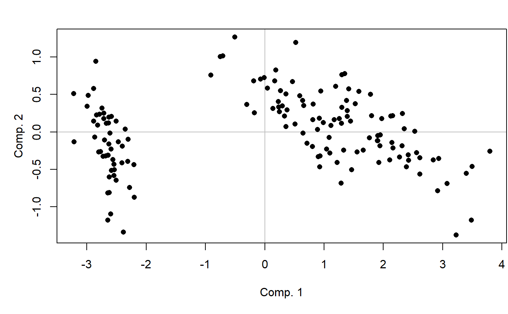
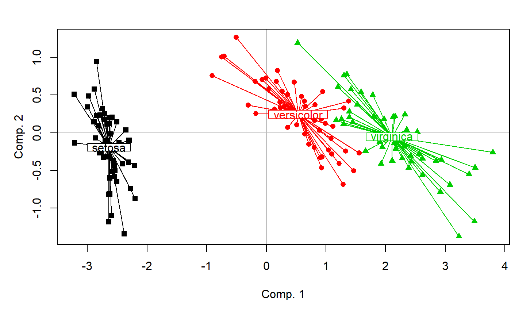

MVA.scoreplot.RdDisplays a score plot of a multivariate analysis.
MVA.scoreplot(x, xax = 1, yax = 2, scaling = 2, set = c(12, 1, 2), space = 1, byfac = TRUE, fac = NULL, barycenters = TRUE, stars = TRUE, contours = FALSE, dhist = TRUE, weights = 1, xlab = NULL, ylab = NULL, main = NULL, pch = 16, cex = 1, col = 1, points = TRUE, labels = NULL, main.pos = c("bottomleft", "topleft", "bottomright", "topright"), main.cex = 1.3, fac.lab = NULL, fac.cex = 1, legend = FALSE, legend.pos = c("topleft", "topright", "bottomleft", "bottomright"), legend.title = NULL, legend.lab = NULL, legend.cex = 1, drawextaxes = TRUE, drawintaxes = TRUE, xlim = NULL, ylim = NULL, keepmar = FALSE)
| x | a multivariate analysis (see Details). |
|---|---|
| xax | the horizontal axis. |
| yax | the vertical axis. This can be set to |
| scaling | type of scaling. Only available with some analyses performed with the |
| set | scores to be displayed, when several sets are available (see Details). |
| space | scores to be displayed, when several spaces are available (see Details). |
| byfac | only used with MCA and mix analyses (see Details). If |
| fac | an optional factor defining groups of individuals. |
| barycenters | only used if |
| stars | only used if |
| contours | only used if |
| dhist | only used in the one-dimensional case. If |
| weights | individual weights, used to calculate barycenter positions (see |
| xlab | legend of the horizontal axis. If |
| ylab | legend of the vertical axis. If |
| main | optional title of the graph. Can be a vector of several values for MCA and mix analyses when |
| pch | symbol(s) used for points, when points are displayed (see |
| cex | size of the points or of the labels (see |
| col | color(s) used for points or labels (see |
| points | only used for two-dimensional graphs. If |
| labels | used in two-dimensional graphs when |
| main.pos | position of the title, if |
| main.cex | size of the title, if |
| fac.lab | only used if |
| fac.cex | only used if |
| legend | logical indicating if a legend should be added to the graph. Available for two-dimensional graphs and for density histograms in the one-dimensional case (see |
| legend.pos | position of the legend, if |
| legend.title | optional title of the legend, if |
| legend.lab | legend labels, if |
| legend.cex | size of legend labels, if |
| drawextaxes | logical indicating if external axes should be drawn. Available for two-dimensional graphs and for density histograms in the one-dimensional case (see |
| drawintaxes | logical indicating if internal axes should be drawn. |
| xlim | limits of the horizontal axis. If |
| ylim | only used in two-dimensional graphs. Limits of the vertical axis. If |
| keepmar | only used in two-dimensional graphs. Logical indicating if margins defined by MVA.scoreplot should be kept after plotting (necessary for biplots). |
This function should not be use directly. Prefer the general MVA.plot, to which all arguments can be passed.
Many multivariate analyses are supported, from various packages:
- PCA: prcomp, princomp (if scores=TRUE), dudi.pca, rda, pca, pca. scaling can be defined for rda (see scores.rda).
- sPCA: spca.
- IPCA: ipca.
- sIPCA: sipca.
- PCoA: cmdscale (with at least on non-default argument), dudi.pco, wcmdscale (with at least one non-default argument), capscale, pco, pcoa.
- nMDS: monoMDS, metaMDS, nmds, isoMDS.
- PLS-DA (PLS2 on a dummy-coded factor): plsda. X space only.
- sPLS-DA (sPLS2 on a dummy-coded factor): splsda. X space only.
- CPPLS: mvr. X space only.
- PLSR: mvr, pls, plsR (plsRglm package). X space only.
- sPLSR: pls. X space only.
- PLS-GLR: plsRglm (plsRglm package).
- PCR: mvr.
- CDA: discrimin, discrimin.coa.
- NSCOA: dudi.nsc.
- MCA: dudi.acm.
- Mix analysis: dudi.mix, dudi.hillsmith.
- COA: dudi.coa, cca. Set 1 is rows, set 2 is columns. If set=12 (default), fac is not available and pch,cex, col can be defined differently for each set. scaling can be defined for cca (see scores.cca).
- DCOA: dudi.dec. Set 1 is rows, set 2 is columns. If set=12 (default), fac is not available and pch,cex, col can be defined differently for each set.
- PCIA: procuste. Set 1 is X, set 2 is Y. If set=12 (default), fac is not available and pch,cex, col can be defined differently for each set.
- Procrustean superimposition: procrustes. Set 1 is X, set 2 is Y. If set=12 (default), fac is not available and pch,cex, col can be defined differently for each set.
- GPA: GPA. Only the consensus ordination can be displayed.
- DPCoA: dpcoa. Set 1 is categories, set 2 is collections. If set=12 (default), fac is not available and pch,cex, col can be defined differently for each set.
- RDA (or PCAIV): pcaiv, pcaivortho, rda. With rda, space 1 is constrained space, space 2 is unconstrained space. Only constrained space is available with pcaiv, the opposite for pcaivortho. scaling can be defined for rda (see scores.rda).
- db-RDA (or CAP): capscale, dbrda. Space 1 is constrained space, space 2 is unconstrained space.
- CCA: pcaiv, cca. With rda, space 1 is constrained space, space 2 is unconstrained space. Only constrained space is available with pcaiv. Set 1 is rows, set 2 is columns. scaling can be defined for cca (see scores.cca).
- CCorA: CCorA, rcc. Space 1 is X, space 2 is Y. With rcc a third space is available, in which coordinates are means of X and Y coordinates.
- rCCorA: rcc. Space 1 is X, space 2 is Y, space 3 is a "common" space in which coordinates are means of X and Y coordinates.
- CIA: coinertia. Space 1 is X, space 2 is Y, space 3 is a "common" space where X and Y scores are normed. In space 3, set 1 is X and set 2 is Y. If set=12 in space 3 (default), fac is not available and pch,cex, col can be defined differently for each set.
- 2B-PLS: pls. Space 1 is X, space 2 is Y, space 3 is a "common" space in which coordinates are means of X and Y coordinates.
- 2B-sPLS: pls. Space 1 is X, space 2 is Y, space 3 is a "common" space in which coordinates are means of X and Y coordinates.
- rGCCA: rgcca, wrapper.rgcca. Space can be 1 to n, the number of blocks (i.e. datasets).
- sGCCA: sgcca, wrapper.sgcca. Space can be 1 to n, the number of blocks (i.e. datasets).
- DIABLO: block.plsda, block.splsda. Space can be 1 to n, the number of blocks (i.e. datasets).
